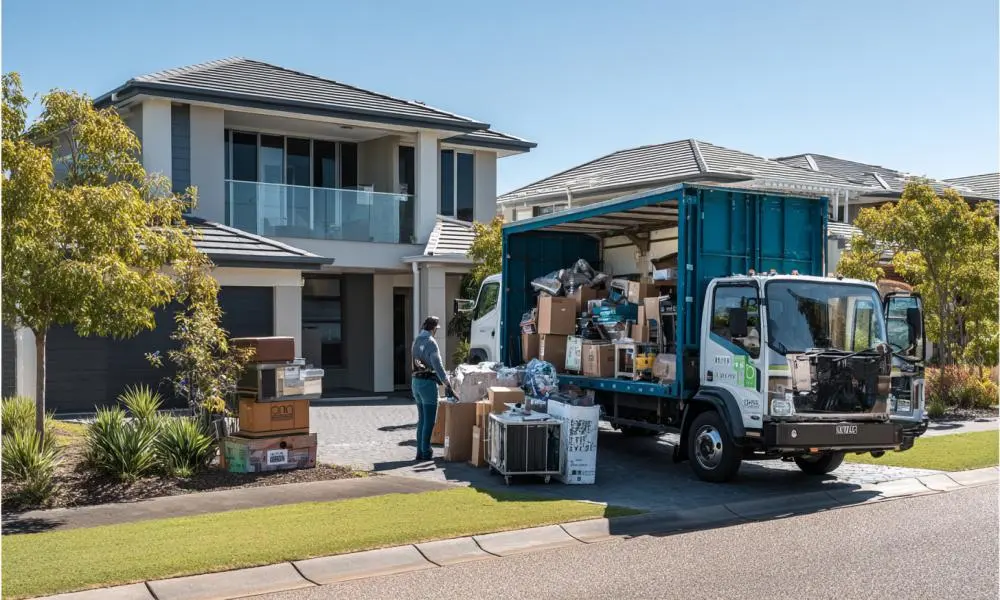
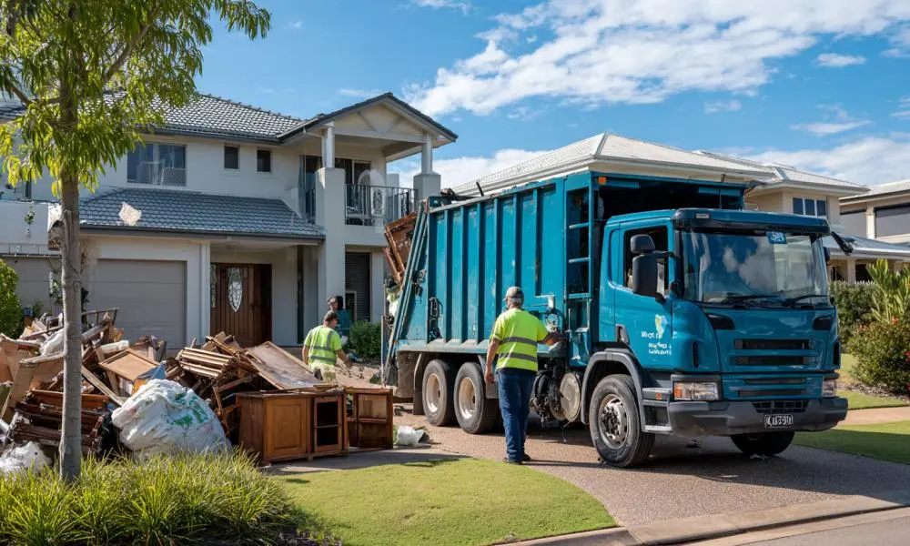

Rubbish Removal Rockhampton Made Easy
Rubbish removal Rockhampton services are designed for customers who want unwanted waste removed quickly without hiring a skip bin or making multiple trips to local disposal facilities. Instead of sorting, loading, transporting, and disposing of waste yourself, a collection team removes the materials directly from your property. This approach is often preferred by homeowners dealing with large cleanups, landlords preparing rental properties, businesses removing unwanted equipment, and property owners who simply want a faster solution. Professional rubbish removal Rockhampton services help reduce physical effort while allowing projects to be completed more efficiently.
Popular Rubbish Removal Rockhampton Projects
Many customers arrange rubbish removal Rockhampton services when waste becomes too large or inconvenient to handle using normal household bins. Common projects include moving house, rental property cleanouts, deceased estate clearances, office relocations, garage cleanups, warehouse decluttering, renovation waste removal, and preparing properties for sale. These projects often involve bulky furniture, mixed household waste, damaged items, green waste, and materials that require significant time and labour to remove. Professional rubbish removal allows customers to complete these projects faster while keeping properties clean, safe, and presentable.
Household Rubbish Removal Rockhampton
Household rubbish removal Rockhampton services are commonly used when unwanted items begin taking up valuable space throughout a property. Old furniture, mattresses, whitegoods, broken appliances, children's toys, boxes, household clutter, and general waste can accumulate over time and become difficult to manage. Many homeowners organise rubbish removal Rockhampton services before selling a property, moving to a new home, downsizing, or starting renovation work. Removing unwanted items not only creates additional space but can also improve property presentation, reduce safety hazards, and make homes easier to maintain. For customers dealing with bulky items that cannot fit into standard council bins, professional collection often provides the most practical solution.
Garden Rubbish Removal Rockhampton
Garden rubbish removal Rockhampton services are frequently used after landscaping projects, seasonal yard maintenance, storm cleanup work, tree pruning, and property upgrades. Green waste can quickly build up and become difficult to manage, particularly when large branches, shrubs, palm fronds, weeds, grass clippings, and vegetation are involved. Many property owners discover that transporting green waste themselves requires significant time, multiple trailer loads, and disposal arrangements. Professional rubbish removal Rockhampton services help clear outdoor areas more efficiently, allowing homeowners and businesses to restore usable space without interrupting other projects. Keeping outdoor areas free from accumulated green waste can also improve property appearance and make ongoing maintenance easier.
Property & Renovation Cleanouts
Renovation projects, rental property turnovers, and large-scale cleanouts can generate substantial amounts of waste in a short period of time. Materials such as timber, plasterboard, old cabinetry, flooring, packaging, fixtures, broken furniture, and general debris can quickly overwhelm available space and slow project progress. Many homeowners use rubbish removal Rockhampton services during kitchen renovations, bathroom upgrades, and home improvement projects to keep work areas clear and organised. Property managers and landlords also rely on professional rubbish removal when preparing homes for sale, clearing deceased estates, or restoring rental properties after tenants move out. Removing waste promptly can improve safety, create more working space, and help projects stay on schedule.
Rubbish Removal Rockhampton Vs Skip Bin Hire
Choosing between rubbish removal Rockhampton services and skip bin hire depends largely on the type of project being completed. Rubbish removal is often preferred when customers want waste removed immediately and do not want to perform the loading themselves. This option can be particularly beneficial for elderly homeowners, busy families, landlords, and customers dealing with heavy furniture or bulky waste. Skip bins may be more suitable for projects that generate waste over several days or weeks, such as major construction work. For one-off cleanups, moving house, property clearances, and furniture disposal, rubbish removal Rockhampton services often provide a faster and more convenient solution because the waste is collected directly from the property.
What Affects Rubbish Removal Costs?
The cost of rubbish removal Rockhampton services is influenced by several factors including waste volume, material type, loading requirements, site accessibility, labour requirements, and disposal fees. Smaller household collections generally require less labour than full property cleanouts or large renovation projects. Heavy materials may require additional handling, while difficult site access can increase the time required to complete the collection. Understanding these factors helps customers compare options and choose a rubbish removal Rockhampton solution that aligns with their project size, timeframe, and budget. Accurate pricing is typically based on the amount of waste being removed rather than simply the type of property.
Rubbish Removal Rockhampton & Nearby Areas
We provide rubbish removal Rockhampton services for residential, commercial, and industrial customers throughout Rockhampton and nearby communities. Customers use our service for household cleanups, rental property clearances, office waste removal, furniture disposal, green waste collection, renovation debris removal, and large-scale property cleanouts. Whether you need a single bulky item collected or require an entire property cleared, rubbish removal Rockhampton services can be tailored to suit different project sizes and access conditions. Our goal is to help customers simplify the waste removal process while reducing the time, effort, and logistical challenges associated with disposing of unwanted materials.

Frequently Asked Questions
What can rubbish removal Rockhampton services remove?
Rubbish removal Rockhampton services commonly handle household waste, furniture, mattresses, appliances, office equipment, green waste, renovation debris, general clutter, and bulky unwanted items. The materials accepted may vary depending on disposal requirements and local regulations. Providing details about your waste helps determine the most suitable collection solution.
Do you offer garden rubbish removal Rockhampton?
Yes. Garden rubbish removal Rockhampton services are regularly used for landscaping projects, storm cleanup work, tree trimming, yard maintenance, and property upgrades. Branches, shrubs, leaves, grass clippings, and other green waste materials can often be collected and removed as part of a scheduled cleanup service.
Is rubbish removal better than a skip bin?
The most suitable option depends on your project. Rubbish removal Rockhampton services are often preferred when customers want waste loaded and removed immediately without doing the physical work themselves. Skip bins can be beneficial for projects that generate waste over an extended period.
How much does rubbish removal Rockhampton cost?
Pricing depends on the volume of rubbish, waste type, labour required, site access, and disposal costs. Smaller household collections usually cost less than large property clearances or renovation cleanouts. Providing information about the project allows for a more accurate assessment.
Can rental property waste be removed?
Yes. Many landlords, tenants, property managers, and real estate professionals use rubbish removal Rockhampton services for end-of-lease cleanups, rental property clearances, deceased estates, and properties being prepared for sale. These projects often involve furniture, household items, general rubbish, and mixed waste materials.